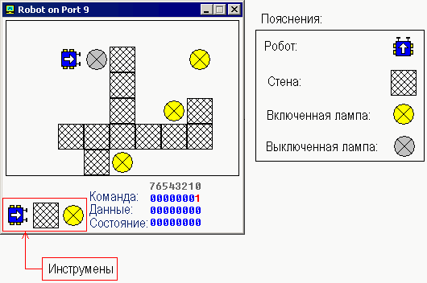

Перевод: Поляков А.В. http://www.avprog.narod.ru
Эмулятор не воспроизводит каие-либо оригинальные порты ввода/вывода. Вместо этого он имеет виртуальные устройства, которые могут быть доступны через команды IN/OUT.
Пользовательские устройства ввода/вывода.
"Emu8086" поддерживает дополнительные устройства, которые могут быть созданы сторонними организациями. Устройство должно быть написано на каком-либо языке программирования, например: Visual Basic, VC++, Delphi. Более подробную информацию и примеры исходного кода ищите в папке DEVICES.
Для пользовательских устройств зарезервированы адреса: от 00000Fh до 0FFFFh (от 15 до 65535). Порт 100 соответствует байту 100 в файле "EmuPort.io", порт 101 - байту 101 и т.п...
(отсчет ведется от нуля).
Файл "EmuPort.io" размещен в каталоге Windows "Temp" (может быть получен с помощью API функции GetTempPath()).
Я буду рад включить разработанные вами устройства в следующий выпуск "Emu8086". Если вы решите поделится своим устройством с другими разработчиками - пожалуйста, вышлите его исходный код нам!
Устройства, которые доступны через меню эмулятора "Virtual Devices".
- Светофор - Порт 4 (слово)
Светофор управляется пересылкой данных через порт ввода/вывода 4.
Имеются 12 ламп: 4 зеленых, 4 желтых и 4 красных.
Вы можете управлять состоянием каждой лампы, устанавливая эти биты:
1 - лампа включена.
0 - лампа выключена.
Используются только 12 младших битов слова (от 0 до 11), последние биты (от 12 до 15) не используются Пример:
MOV AX, 0000001011110100b
OUT 4, AX

Мы используем в подписях к рисунку шестнадцатиричные цифры желтого цвета (для компактности). Ниже приведена таблица преобразования шестнадцатиричных цифр в десятичные:
Шест. - Десят. A - 10 B - 11 C - 12 (не используется) D - 13 (не используется) E - 14 (не используется) F - 15 (не используется)
Первый операнд для команды OUT - это номер порта (4), второй операнд - это слово (AX), которое записывается в порт. Первый операнд должен быть непосредственным значением в диапазоне (0..255) или регистром DX. Второй операнд должен быть только регистром AX или AL.
См. также "traffic_lights.asm" в Samples.
Если нужно, вы можете прочитать данные из порта, используя команду IN, например:
IN AX, 4
Первый операнд в команде IN (AX) получает значение из порта, второй операнд (4) - это номер порта. Первый операнд должен быть только регистром AX или AL. Второй операнд должен быть непосредственным значением от 0 до 255 или регистром DX.
- Шаговый двигатель - Порт 7 (байт)
Шаговый двигатель управляется посылкой данных в порт ввода-вывода 7.
Шаговый двигатель - это электромотор, который может точно управляться сигналами от компьютера.
Двигатель поворачивается на определенный угол каждый раз, когда он принимает сигнал. Изменяя соотношение между продолжительностью импульсов и пауз, можно заставить двигатель вращаться с разной скоростью или повернуть ротор на заданный угол и сотановить двигатель.
В основе 3-х фазного шагового двигателя лежит конструкция из 3-х магнитов, управляемых битами 0, 1 и 2. Остальные биты (2..7) не используются.
Когда магнит работает, он становится красным. Стрелка в левом верхнем углу показывает направление последнего движения мотора. Зеленая линия здесь только для того, чтобы видеть реальное вращение.

Например, код, приведенный ниже, позволяет выполнить три полушага по часовой стрелке:
MOV AL, 001b ; инициализация.
OUT 7, AL
MOV AL, 011b ; полушаг 1.
OUT 7, AL
MOV AL, 010b ; полушаг 2.
OUT 7, AL
MOV AL, 110b ; полушаг 3.
OUT 7, AL
Если вы когда-либо играли с магнитами, вы поймете, как это работает. Попробуйте поэксперементировать, или см. "stepper_motor.asm" в Samples.
Если потребуется, вы должны прочитать данные из порта, используя команду IN, например:
IN AL, 7
- Робот - Порт 9 (3 байта)

Робот управляется посылкой данных в порт ввода-вывода 9.
Первый байт (Порт 9) - это Командный регистр. Запись данных в этот порт заставляет робота выполнять определенные действия. Поддерживаются следующие значения:
Десятичное значение Двоичное значение Действие 0 00000000 Бездействие. 1 00000001 Движение вперед. 2 00000010 Поворот налево. 3 00000011 Поворот направо. 4 00000100 Исследование. Исследует объект перед собой, используя датчик. Если робот завершает задачу, результат устанавливается в Регистр данных и Бит #0 Регистра состояния установлен в 1. 5 00000101 Включение лампы. 6 00000110 Выключение лампы.
Второй байт (порт 10) - это Регистр данных. Этот регистр устанавливается после завершения задачи командой Исследование:
Десятичное значение Двоичное значение Значение 255 11111111 Стена 0 00000000 Ничего 7 00000111 Лампа включена 8 00001000 Лампа выключена
Третий байт (порт 11) - это Регистр состояния. Чтение данных из этого порта позволяет определить состояние робота. Каждый бит имеет определенное свойство:
Номер бита Описание Бит #0 ноль, если в Регистре данных нет новых данных, единица, если в Регистре данных новые (не прочитанные) данные. Бит #1 ноль, если робот готов принять следующую команду, единица, если робот занят выполнением текущей задачи. Бит #2 ноль, если нет ошибок при выполнении последней команды, единица, если случилась ошибка при выполнении команды (когда робот не может завершить задачу: движение, поворот, исследование, включение или выключение лампы).
Пример:
MOV AL, 1 ; движение вперед. OUT 9, AL ; MOV AL, 3 ; поворот вправо. OUT 9, AL ; MOV AL, 1 ; движение вперед. OUT 9, AL ; MOV AL, 2 ; поворот влево. OUT 9, AL ; MOV AL, 1 ; движение вперед. OUT 9, AL ;
Примите во внимание, что робот - это механическое создание, поэтому для выполнения команд ему требуется какое-то время. Вы должны всегда проверять бит#1 Регистра состояния, прежде чем записать данные в порт 9, иначе робот откажется выполнять вашу команду и вы увидите надпись "BUSY!". См. "robot.asm" в Samples.
Создание пользовательсокой Карты мира робота
Вы можете создать любую карту для робота, используя панель инструментов (см. рис.).
Если вы выберите робота и разместите его над существующим роботом, он повернется на 90 градусов по часовой стрелке. Чтобы передвинуть робота на другое место, щелкните по нему, затем щелкните в нужном месте карты.
Если вы выберите лампу и разместите ее над включенной лампой, то лампа будет выключена, если лампа уже выключена, то она будет удалена.
Если разместить стену над существующей стеной, то стена будет удалена.
Данная версия работает только с одним роботом. Если вы забудете разместить робота на карте, то он будет помещен туда автоматически в случайном месте.
Карта автоматически сохраняется после выхода.
Щелчок правой кнопкой по карте вызовет меню, которое позволяетвключать/выключать все лампы.